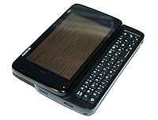

Nokia N900
|  | |
| Manufacturer | Nokia |
|---|---|
| Type | Mobile Internet device, handheld computer and smartphone |
| Release date | November 11, 2009 |
| Media | microSD/microSDHC card[1] |
| Operating system | Maemo 5,[2] MeeGo |
| Power | MicroUSB Battery Charger, |
| CPU | TI OMAP 3430 SoC 600 MHz ARM Cortex-A8 CPU 430 MHz C64x+ DSP[2] |
| Storage capacity | 256 MB NAND flash 32 GB eMMC flash[2] |
| Memory | 256 MB Mobile DDR 768 MB swap space for a total of 1 GB virtual memory[2] |
| Display | TFT 800 × 480 resolution 89 mm (3.5 in) diagonally 105 pixels/cm, 267 ppi[2] |
| Graphics | PowerVR SGX 530 GPU supporting OpenGL ES 2.0[2] |
| Sound | Stereo loudspeaker 3.5 mm TRRS for Audio/Headphones/Video out |
| Input | Resistive touchscreen Localized backlit keyboard with variations for English, Italian, French, German, Russian, Scandinavian and Spanish microphone 3-axis accelerometer Proximity sensor Ambient light sensor |
| Camera | 5.0 MP (2,584×1,938) 1/2.5" sensor,[3] f/2.8 5.2mm (31.2mm focal length in 35mm terminology) Carl Zeiss Tessar lens (rear camera) 0.3 MP (640×480) f/2.8 (front camera)[2][4] |
| Connectivity | GSM 850/900/1800/1900 GPRS 107/64 kbps DL/UL EDGE 296/178 kbps DL/UL UMTS 900/1700/2100 WCDMA 384/384 kbps DL/UL HSPA 10/2 Mbps DL/UL WLAN IEEE 802.11 b/g Bluetooth 2.1 Integrated GPS with A-GPS[1] 88-108 MHz FM receiver 88-110 MHz FM transmitter Infrared transmitter |
| Online services | skype, IM chats, facebook |
| Dimensions | 110.9 mm (4.37 in) (h) 59.8 mm (2.35 in) (w) 18 mm (0.71 in) (d) 19.55 mm at thickest part[2] |
| Weight | approx. 181 g (0.40 lb)[2] |
| Predecessor | Nokia N810 |
| Successor | Nokia N950 / Nokia N9 |
{kind=link}
The Nokia N900 is a smartphone made by Nokia.[5] It supersedes the Nokia N810. Its default operating system, Maemo 5, is a Linux-based OS originally developed for the Nokia 770 Internet Tablet. It is the first Nokia device based upon the Texas Instruments OMAP3 microprocessor with the ARM Cortex-A8 core. Unlike the three Nokia Internet tablets preceding it, the Nokia N900 is the first Maemo device to include phone functionality (quad-band GSM and 3G UMTS/HSDPA).[6]
The N900 functions as a mobile Internet device, and includes e-mail, web browsing and access to online services, a 5 mega pixel digital camera for still or video photography, a portable media player for music and video, calculator, games console and text processor, SMS, as well as mobile telephony using either a mobile network or VoIP via Internet (mobile or Wi-Fi).[7] Maemo provides an X-terminal interface for interacting with the core operating system.
It was launched at Nokia World on September 2, 2009 and was released on November 11, 2009 in the United States and 9 European countries.
The N900 was launched alongside Maemo 5, giving the device an overall more touch-friendly interface than its predecessors and a customizable home screen which mixes application icons with shortcuts and widgets. Maemo 5 supports Adobe Flash Player 9.4, and includes many applications designed specifically for the mobile platform such as a new touch-friendly media player.[8][9]
Contents |
[edit] History and availability
The Nokia N900 was announced on September 17, 2008 during a keynote presentation by Dr. Ari Jaaksi of Nokia. New supported features were announced for Maemo 5 such as cellular connectivity over 3G/HSPA, TI OMAP3 processor and high definition camera support. No news on backward compatibility for older Internet Tablets and no time frame was established.[10] The release of the pre-alpha Maemo 5 software development kit, in December 2008[11] targeted exclusively the OMAP3 architecture, revamped the user interface, included support for hardware graphics acceleration and other functionalities not found in Internet Tablets at the time such as cellular data connectivity and high definition camera support.
The first photo and specifications of the N900, codenamed Rover while being developed, came out in May 2009.[12][13] The release of FCC approval documents in August 2009 confirmed the device and provided the second codename RX-51.[14][15][16] The Nokia N900 was officially announced on 2 September 2009 at Nokia World 2009 in Germany. Nokia says it is step 4 of 5 in the line of Maemo devices which started in 2005 with the Nokia 770.[17]
The device was initially available in selected markets starting November 2009 (4 December in the UK)[18] with a retail price of €599 in Finland,[19] Germany,[20] Italy,[21] Netherlands[22] and Spain,[23] €649 in France,[24] 2499 zł in Poland,[25] 5995 kr[26] in Sweden and £499[27] in the United Kingdom, all prices including VAT but excluding subsidies. The retail price at launch was US$649 in the United States excluding sales taxes and subsidies.[1][28] It will be available in Canada through independent retailers for around C$800.[29][30] As of March 2010 the Nokia site in Australia lists the N900 on the homepage, hinting at launch some time in the near future.[31][32] Black was the only color available at launch. Initially, availability was extremely limited, leading to further delays. The statement from Nokia was that there was higher pre-order demand than expected.[33] The Nokia N900 launched in Hong Kong on 29 May 2010, with added features to facilitate character handwriting input. Price at launch was 4998 HKD.[34] It has already been released to Australia via Optus.
[edit] Hardware
{kind=link}
[edit] Processors
The Nokia N900 is powered by an OMAP 3430 ARM Cortex A8 which is a System-on-a-chip made by Texas Instruments based on a 65 nanometer CMOS process. The OMAP 3430 is composed of three microprocessors; the Cortex A8 running at 600 MHz (up to 1.15 GHz with good overclocking) used to run the OS and applications, the PowerVR SGX 530 GPU made by Imagination Technologies which supports OpenGL ES 2.0 and is capable of up to 14 MPolys/s and a TMS320C64x, the digital signal processors, running at 430 MHz used to run the image processing (camera), audio processing (telephony) and data transmission. The TMS320 C64x main purpose is to offload the Cortex A8 from having to process audio and video signal.[35] Moreover the OMAP 3430 on some N900 devices has been successfully over-clocked up to 1150 MHz by using a modified kernel and editing the kernel power configuration file.[36] The system has 256 MB of dedicated high performance RAM (Mobile DDR) paired with access to 768 MB swap space managed by the OS.[2] This provides a total of 1 GB of virtual memory.
[edit] Screen and input
The Nokia N900 has a 3.5-inch (89 mm) resistive touchscreen with a resolution of 800 × 480 pixel (WVGA, 267 ppi). According to both Nokia and the Xorg.log, it is capable of displaying up to 65k colours (565 RGB).[37] Nokia N900 camera capability is 2592x1944 pixels, Carl Zeiss optics, autofocus, Dual LED flash, video light, geo-tagging[38] The LCD is transreflective to permit usability over a wide range of luminosity (from daylight to dark). Haptic feedback is provided to touchscreen input by applying a small vibration or a sound; the user can choose whether to have this feature enabled.[39] A stylus is provided to allow more precise touch input and access to smaller user interface elements. A 3-axis accelerometer allows the orientation of the screen to change between portrait and landscape mode in certain applications, or it can be used as user input in games and applications.[40] While the dashboard or desktop is active, rotating the device from landscape to portrait mode activates the phone application (a feature that can also be disabled at user discretion).[41] With update PR1.2, It became possible to view web pages in portrait mode.[42] Developers may add support for portrait mode in their applications if desired.[41][43] There is a proximity sensor which deactivates the display and touchscreen when the device is brought near the face during a call.[44]
The slide-out 4-row keyboard and D-pad of the Nokia N810 have been replaced on the Nokia N900 with a slide-out 3-row backlit keyboard with arrow keys (as with previous Internet Tablets, an on-screen keyboard is also available). In addition to the English QWERTY layout, the slide out keyboard will be available in variants for Italian,[45] French,[46] German,[47] Russian,[48] Czech,[49] Nordic (Finnish, Swedish),[50][51] and Spanish. The Nokia N900 has an ambient light sensor that adjusts the display brightness and activates the backlit keyboard.[52] The OS comes with a word prediction software that can be configured to the user preferences (auto capitalization, word completion, auto spacing between words).[53]
The device has an autonomous GPS with optional A-GPS functionality and comes pre-loaded with the Ovi Maps application. Ovi Maps provides typical mapping features such as alternate views (3D landmarks, satellite, and hybrid maps), address/places of interest searching, and route planning, although it does not have turn-by-turn navigation as of yet.[54][55]
{kind=link}
The 5 megapixel back camera has an autofocus feature, dual LED flash, 4:3 and 16:9 aspect ratio options, and 3× digital zoom. The focal length of this camera is 5.2 mm, the aperture is f/2.8, and the focus range is 10 cm to infinity.[4] It is capable of video recording at up to 848 × 480 pixels at 25 fps. The lens, while not in use, is protected by a sliding hatch. Opening the hatch launches the camera application. Although the 0.3 megapixel front camera is capable of video recording at up to 640 × 480 pixels[4] and pre-production units could be used for video calls over IP using Google Talk,[56] the retail version was delivered without any software enabling video calling or video chatting.[57] In update PR1.2 OTA (over-the-air) Skype video calling was added, enabling the fascia camera.[42]
[edit] Buttons
When holding the device facing the screen; on the top, from left to right, rocking buttons (which function as volume up/down or zoom in/out depending on the context), power on/off and camera button. Pressing the power button brings up a menu to change the profile, activate offline mode (a.k.a. "Airplane or Flight mode", which turns off all emitted signals), Lock Device (either "Secure" with key code, or simple lock),[58] and an option to end the current task.
As the Nokia N900 has fewer hardware buttons, it makes use of the touchscreen to display on-screen buttons, for example, to accept, reject and end a call.
[edit] Audio and output
The N900 has a microphone and stereo speakers located on each side of the device. There is a 3.5 mm four-contact TRRS connector which simultaneously provides stereo audio output and either microphone input or video output.[59] PAL and NTSC TV out is possible using a Nokia Video Connectivity Cable (included upon purchase) or a standard TRRS -> 3x RCA cable.
There is a High-Speed USB 2.0 USB Micro-B connector provided for data synchronization, mass storage mode (client) and battery charging. The Nokia N900, unlike previous versions of Nokia's Internet Tablet, hasn't enabled support for USB On-The-Go (the ability to act as a USB host) by default, this in order to meet the deadlines for production and USB certification.[60] There is an ongoing community effort to add this support subsequently, currently the software is in beta stage.[61] Requiring a non-standard USB cable or USB A-A adapter and software from the development repository.
The built-in Bluetooth v2.1 supports wireless earpieces and headphones through the HSP profile. The Nokia N900 supports hardware capable of stereo audio output with the A2DP profile. Built-in car hands-free kits are also supported with the HFP profile. File transfer is supported (FTP) along with the OPP profile for sending/receiving objects. It is possible to remote control the device with the AVRCP profile.[4] The DUN profile which permits access to the Internet from a laptop by dialing up on a mobile phone wirelessly (tethering), the HID profile which provides support for devices such as Bluetooth keyboards and PAN profile for networking using Bluetooth are unsupported but can be enabled.[62]
The Bluetooth set also functions as a FM Receiver, allowing one to listen to the FM radio. The N900 also has a 88.1–107.9 MHz FM transmitter which can, for example, play music through a separate radio. ( Note that the FM transmitter's frequency range can be extended to 76.0–107.9 MHz by community supported modifications to the operating system [63][64]) Furthermore, the Nokia N900 has Wi-Fi b/g connectivity with support for WEP, WPA and WPA2 (AES/TKIP) security protocols.[65]
The Nokia N900 can synchronize with Microsoft Outlook through ActiveSync and various other e-mail and calendar clients through SyncML over bluetooth or the micro-USB.[4] Contact information can also be exchanged via the vCard file format which is supported commonly by e-mail programs, including Evolution and Microsoft Outlook.
The device also features an infrared port (not compatible with IrDA[66]) that can be used to turn the Nokia N900 into a remote controller using third-party software.[67]
[edit] Battery and SIM
The battery life of the shipped BL-5J (1320mAh) battery in N900 seems very deficient and it was not able to make it through a full working day with a internet connection and call usage.[68] In a press release[69] Nokia stated they are aiming at "one day of full usage"[70] or "Always online : Up to 2-4 days (TCP/IP connected)" and "Active online usage: Up to 1+ day". Early reports from users range from 12 hours (Wi-Fi on, web browsing, video and some GPS),[71][72] to about 2 days online but not used continuously.[73] The value appears to be highly dependent on the user's choice of background software, active desktop widgets, IM and email polling, as well as mobile network signal quality (especially 3G) and in some cases, software bugs. Nokia reported talk times are around 9 hours with GSM and 5 hours with 3G.[74] Battery life can be extended significantly by switching off GPS/A-GPS, Wi-Fi, and Bluetooth and by replacing 3G by 2G / GPRS.
While previous Internet Tablets used larger batteries (1500 mAh compared with the N900's 1320 mAh), they are based on a less efficient microprocessor. Typical battery time for the Nokia N810 is around 7 hours of continuous full usage, display and Wi-Fi on. In principle, on N900 figures are expected to be much higher. Third party extended batteries up to 2400 mAh capacity are available for the N900.[75] Also, there are community supported modifications that can be performed on 3rd party N900 compatible batteries, usually involving putting two of said batteries in parallel, which can increase the effective battery capacity of the Nokia N900 to over 3000 mAh.[76]
The SIM card is located under the battery which can be accessed by removing the back panel of the Nokia N900. The microSD(HC) card socket is also located under the back cover (but not under the battery). No tool is necessary to remove the back panel.
[edit] Storage
The Nokia N900 has 32 GB eMMC and 256 MB NAND non-removable storage.[2] Additional storage is available via a hot swappable microSDHC card socket, which is certified to support up to 16 GB of additional storage.[77] Hot swapping works based on a magnetic sensor which detects removal of the back cover, which causes the partition to be unmounted. The microSDHC card can be formatted with a supported file system such as ext2, ext3, FAT16 and FAT32.[citation needed]
The 32 GB eMMC is split into 3 partitions:[35]
- 2 GB as ext3 mounted to /home
- 768 MB as swap
- the remainder as VFAT mounted to /home/user/MyDocs with about 27 GB of free space.
The 256 MB NAND is formatted as UBIFS[78] and contains the bootloader, kernel and root directory "/"[citation needed] with about 100 MB of free space.[79]
Programs larger than 500 kB including dependencies should be stored in /opt which is symlinked to /home/opt and therefore located on the 2 GB ext3 partition. The VFAT partition is also available for storage but needs to be used carefully as it is unmounted and exported if a USB cable is connected to the device.[79][80]
[edit] Software
{kind=link}
The file File:Screenshot-20100703-034617.png has an uncertain copyright status and may be deleted. You can comment on its removal.
{kind=link}
Maemo 5, also known as Fremantle, is the default operating system on the Nokia N900. Maemo 5 is Nokia's adaptation of the Linux desktop environment for a pocket-sized device.[81] The UI is fully customizable: the user is able to move widgets around, add/remove widgets, change the background and add shortcuts to applications.[82] The N900 comes preloaded with a variety of applications such as:
- Web: Mozilla-based web browser called MicroB, which includes Adobe Flash 9.4 and RSS reader.[83]
- Phone application
- VoIP: Session initiation protocol, Skype with video chat,[41] Google Talk with Video
- Conversations (IM chat and SMS, MMS (only with the PR1.2 software update)[84])
- Media: Camera, Photos, Media player
- Productivity: Email, Calendar, PDF reader, Contacts
- Ovi Maps (Find position on a map using the GPS, Search an address or location, Plan routes)
- Utilities: Clock, Notes, Calculator, Sketch,File manager
- System Tools: File manager, Application manager for downloads, Widgets
- Games: Bounce, Chess, Mahjong, Blocks (Tetris), Marbles
More than 1500 additional applications (an overwhelming majority of them free to download and use) have been created by 3rd party developers.[85]
The OS uses upstart to reduce the boot time.[86]
An application called "Easy Debian" installs a Debian LXDE image on the internal memory, this facilitates the running of applications within Maemo such as IceWeasel (Firefox browser) and all of the OpenOffice.org suite. Within the LXDE interface, other applications in the Synaptic package manager that are included in the Debian installation, such as GIMP, can be run. Software can also be added to Debian using a chroot tool within Maemo using Synaptic or apt-get at the command line, such as Stellarium or the zim desktop wiki, and this can then be accessed either via the LXDE desktop, by icons in the program manager or shortcuts on the desktop.
[edit] Missing SIM Application Toolkit
In Nokia N900, there is no "Operator Menu" (or SIM Application Toolkit), so it is not possible to use any services that require it. Examples of problems:
- Estonia – MobileID (mobile National ID) is not working on N900[87][88]
- Kenya – MPESA & ZAP (mobile money transfer) services are not available on the N900
- Norway – "mobile BankID" is not working (N900 cannot work as mobile banking token).[89][90]
- Philippines – "Smart Menu" is not available on N900
- Romania – DigiMobil Roaming is not working on N900
- Romania – Vodafone Numar Dual (Dual Number) is not working on N900
- Sweden – "Mobil BankID" is not working on N900
- Tanzania – MPESA & ZAP (mobile money transfer) services are not available on N900
[edit] Known issues
Nokia often offers new N8 or E7 devices as warranty replacements for N900s. Although warranty terms and consumer rights legislation differ across jurisdictions, users have reported success in refusing those and pressing for an N900 in at least the EU and India as recently as August 2011. Owners who are not confident of getting an N900 as a warranty replacement often attempt to repair their own devices, or sell the Nokia-provided replacement to buy an N900 instead.[91]
The N900's proximity sensor, which is designed to lock the touch screen when the phone is against the user's ear to prevent accidental operation, locks the screen unintentionally in bright light (usually outdoors) when a call is placed or received. Nokia has acknowledged that it is a "hardware issue" and cannot be addressed. To unlock the screen in a phone call, a tactile unlock switch in the right side of the device can be used. This however will keep the touch screen active and accidental operation of the phone keys in a call may occur when device is used as a handset. Application of screen protectors is blamed on the issue, however N900 users without screen protectors are also experiencing the problem.[92]
Also the N900's MicroUSB (charger) port is very fragile, Some people have successfully fixed this problem with either epoxy glue or soldering the USB port down on the motherboard[93]
Also the SIM-card reader might be badly soldered to the board. Multiple N900 devices are troubled by the problem that the SIM-card cannot be detected anymore. You might be able to fix this by putting something between the battery and the SIM-card holder, effectively pushing the SIM-card holder to the board and solving the issue. http://talk.maemo.org/showthread.php?p=1147506
[edit] Future
It was announced in May 2010 that the Nokia N900 will be the last mobile communication device running the Maemo 5 operating system, which will be replaced by MeeGo. Nokia will continue to support the N900 with updates when necessary.[94]
While transition to the succeeding MeeGo operating system is possible, this is mainly of interest to developers rather than consumers, as it is not officially supported by Nokia.[42][94] There has been some interest within the user community in working on backporting MeeGo developments to Maemo for the N900, and this places it as being an interesting device for people within the wider Open Source community more than consumers.[94]
A download of the MeeGo operating system is available, but not officially supported by Nokia.[42][95] Nokia used to say that MeeGo was going to succeed Maemo for new devices; however, on 11 February 2011 Nokia announced it will be primarily concentrating on their alliance with Microsoft. MeeGo development will not be stopped and one MeeGo device will become available in 2011.[96]
On March 3, 2011, Jukka Eklund, Product Manager, MeeGo OS at Nokia announced in the MeeGo-dev mailing list[97] that there will be a MeeGo 1.2 Developer Edition for N900 developed by a dedicated Nokia team led by Mika Leppinen.[98] The target of this particular edition is to be usable as a primary phone device for a developer/hacker person but not for regular end users.[98]
The September 2011 announcement that Intel and the Linux Foundation were abandoning MeeGo in favor of Tizen[99] prompted the developer community to begin to seriously doubt the future of MeeGo on the n900. [100] [101] Subsequently, developers rapidly left the project, leading to an abrupt halt of discussion on the Meego-dev mailing list.[102]
There is also an unofficial port of Android to the device.[103]
[edit] See also
- Internet appliance
- Internet tablet
- Nokia 770
- Nokia N800
- Nokia N810
- Nokia N97
- Nokia N9
- Nokia N950
- List of open source mobile phones
[edit] References
- ^ a b c "Maemo 5 injects speed and power into mobile computing" (Press release). Nokia Corporation. 27 August 2009. http://www.nokia.com/press/press-releases/showpressrelease?newsid=1337594. Retrieved 19 September 2009.
- ^ a b c d e f g h i j k l "Maemo software – Nokia > Nokia N900 mobile computer > Technical specifications". Nokia Corporation. http://maemo.nokia.com/n900/specifications/. Retrieved 19 September 2009.
- ^ http://talk.maemo.org/archive/index.php/t-33855.html
- ^ a b c d e "Device Details – Nokia N900". Nokia Corporation. http://www.forum.nokia.com/devices/N900. Retrieved 16 September 2009.
- ^ http://www.engadget.com/2010/01/19/nokia-n900-review/
- ^ http://www.nokia.co.uk/find-products/all-phones/nokia-n900/specifications
- ^ Response from Nokia support to customer enquiry
- ^ "Nokia N900 official, uses Linux to 'kill' iPhone". MNM Media, LLC. 27 August 2009. http://www.electronista.com/articles/09/08/27/nokia.n900.official/. Retrieved 2 September 2009.
- ^ "(STEP BY STEP) How to Get Free Applications for Maemo5 OS". 27 August 2010. http://www.nokian900forum.net/nokia-n900-how-to/%28step-by-step%29-how-to-get-free-applications-for-maemo5-os-gtgtgt/. Retrieved 2 September 2010.
- ^ "Dr. Ari Jaaksi on Maemo 5 at Internet Tablet Talk". Internet Tablet Talk. 17 September 2008. http://www.internettablettalk.com/2008/09/17/dr-ari-jaaksi-on-maemo-5/. Retrieved 17 September 2009.
- ^ "maemo.org – Announcements: First Maemo 5 SDK Release Targeting Platform Developers". Nokia Corporation. http://maemo.org/news/announcements/first_maemo_5_sdk_release_targeting_platform_developers/. Retrieved 17 September 2009.
- ^ "Exclusive: Everything There Is To Know About Nokia’s Next Tablet". TechCrunch. 24 May 2009. http://www.mobilecrunch.com/2009/05/24/exclusive-everything-there-is-to-know-about-nokias-next-tablet/. Retrieved 17 September 2009.
- ^ "Nokia Rover is an N97 killer Internet tablet". CellPassion Networks. 25 May 2009. http://www.cellpassion.com/news/2009/05/25/nokia-rover-is-an-n97-killer-internet-tablet.aspx. Retrieved 17 September 2009.[dead link]
- ^ "FCC Part 15C Compliance Test Report". US Federal Communications Commission. 16 July 2009. https://fjallfoss.fcc.gov/prod/oet/forms/blobs/retrieve.cgi?attachment_id=1150131&native_or_pdf=pdf. Retrieved 17 September 2009.
- ^ "SAR Compliance Test Report". US Federal Communications Commission. 7 July 2009. https://fjallfoss.fcc.gov/prod/oet/forms/blobs/retrieve.cgi?attachment_id=1150129&native_or_pdf=pdf. Retrieved 17 September 2009.
- ^ "FCC ID Label". US Federal Communications Commission. 3 July 2009. https://fjallfoss.fcc.gov/prod/oet/forms/blobs/retrieve.cgi?attachment_id=1150126&native_or_pdf=pdf. Retrieved 17 September 2009.
- ^ Olli-Pekka Kallasvuo, Anssi Vanjoki (2 September 2009) (flash video). Nokia Keynotes on Sep 2 – Olli-Pekka Kallasvuo and Anssi Vanjoki (keynote presentation). Nokia Corporation. http://webcast.nokia.com/CCUIv3/login.aspx?ticket=678-750-7790&target=en. Retrieved 17 September 2009.
- ^ "Nokia N900". Nokiaretail.co.uk. http://www.nokiaretail.co.uk/Brands/Nokia/Nseries-Multimedia-Phones/sb489/p26078.htm. Retrieved 2010-01-01.
- ^ "Nokia Online Kauppa – Puhelimet | Puhelimet mallin mukaan | Nokia N900". Kauppa.nokia.fi. http://kauppa.nokia.fi/nokia-fi/product.aspx?sku=6958193&culture=fi-FI. Retrieved 2010-01-01.
- ^ "Nokia Handys & Handy-Zubehör kaufen – Nokia Online Shop Deutschland – Mobiltelefone | Nseries | Nokia N900". Shop.nokia.de. http://shop.nokia.de/nokia-de/product.aspx?sku=6958534. Retrieved 2010-01-01.
- ^ "Nokia Italia Online Shop – Telefoni | Internet tablets | Nokia N900". Shop.nokia.it. http://shop.nokia.it/nokia-it/product.aspx?sku=6957164&culture=it-IT. Retrieved 2010-01-01.
- ^ "Nokia Online Shop Nederland – Telefoons | Multimedia | Nokia N900". Shop.nokia.nl. http://shop.nokia.nl/nokia-nl/product.aspx?sku=6958651&culture=nl-NL. Retrieved 2010-01-01.
- ^ "Tienda Online de Nokia España – Móviles | Nseries | Nokia N900 + Manos Libres Bluetooth BH-212 GRATIS". Tienda.nokia.es. http://tienda.nokia.es/nokia-es/product.aspx?sku=10195587. Retrieved 2010-01-01.
- ^ "Nokia Store – Achetez en ligne tous les téléphones mobiles et accessoires Nokia – Téléphones | Nseries | Nokia N900". Boutique.nokia.fr. http://boutique.nokia.fr/nokia-fr/product.aspx?sku=6957877&culture=fr-FR. Retrieved 2010-01-01.
- ^ "Sklep Online Nokia Poland – Telefony | Wszystkie telefony | Nokia N900". Sklep.nokia.pl. http://sklep.nokia.pl/nokia-pl/product.aspx?sku=10195359&culture=pl-PL. Retrieved 2010-01-01.
- ^ "Nokia mobiltelefoner och tillbehör - Webbplatsrubrik för sidrubrikinnehåll för SEO" (in (Swedish)). Shop.nokia.se. http://shop.nokia.se/nokia-se/product.aspx?sku=6958233&culture=sv-SE. Retrieved 2010-06-05.
- ^ "Nokia Online Shop UK – Phones – All Phones – Nokia N900". Nokia Corporation. http://shop.nokia.co.uk/nokia-uk/product.aspx?sku=6957363&culture=en-GB. Retrieved 16 September 2009.
- ^ "Nokia USA – Nokia N900 – Products". Nokia Corporation. http://www.nokiausa.com/find-products/phones/nokia-n900?lid=teaser_N900_preorder&lpos=3#/main/landing. Retrieved 16 September 2009.
- ^ "Buy a Nokia N900 (Unlocked), #002L929 – eXpansys Canada". eXpansys plc.. http://www.expansys.ca/d.aspx?i=187417. Retrieved 1 December 2009.
- ^ "SN Traders Communications Technologies". SN Traders Communication Technologies Inc.. http://sntradersonline.com/phone_details.php?product_id=snp1185. Retrieved 1 December 2009.
- ^ "Nokia Australia - Nokia N900 - Mobile Phone, Touchscreen, Linux Mobile Computer". Nokia. http://www.nokia.com.au/find-products/all-phones/nokia-n900-01. Retrieved 4 March 2010.
- ^ "Nokia N900 coming to retailers in April - ovi store, Nokia, N900, mobile linux, mobile applications, Maemo, app store". Computerworld. 2010-03-03. http://www.computerworld.com.au/article/338189/nokia_n900_coming_retailers_april/. Retrieved 2010-06-05.
- ^ "Noknok.tv Nokia N900 delayed until 4th November". http://noknok.tv/2009/11/25/exclusive-nokia-n900-delayed-until-4th-december/.
- ^ "Nokia N900 will be officially launched in Hong Kong on May 5th - with PR1.2 & extra goodies! - maemo.org - Talk". Talk.maemo.org. http://talk.maemo.org/showthread.php?t=50848&page=14. Retrieved 2010-08-12.
- ^ a b "Nokia N900 Preview". My-Symbian.com. http://my-symbian.com/other/preview_n900.php. Retrieved 18 October 2009.
- ^ "Kernel Power". http://wiki.maemo.org/Kernel_Power.
- ^ "Nokia Suomi - Nokia N900 - Tarkka tuoteseloste". Nokia Corporation. http://www.nokia.fi/tuotteet/kaikki-puhelimet/nokia-n900/tarkka-tuoteseloste#hardware-dui. Retrieved 8 September 2010.
- ^ "Nokia N900". Nokia Corporation. http://www.mobileprice.pk/Nokia/Nokia-N900.html. Retrieved 9 September 2010.
- ^ "Easter egg in the RX-51? – Page 15 – maemo.org – Talk". Nokia Corporation. http://talk.maemo.org/showthread.php?t=30852&page=15. Retrieved 14 September 2009.
- ^ YouTube – New Bounce on nokia N900. YouTube, LLC. 7 September 2009. http://www.youtube.com/watch?v=JraW38H_PtM. Retrieved 16 September 2009.
- ^ a b c "Maemo software – Nokia > Phone". Nokia Corporation. http://maemo.nokia.com/features/phone/. Retrieved 16 September 2009.
- ^ a b c d Nokia N900 software update release 1.2 retrieved 28 May 2010
- ^ "Using Fremantle Widgets – maemo.org wiki – Portrait Mode". Nokia Corporation. http://wiki.maemo.org/Using_Fremantle_Widgets#Portrait_Mode. Retrieved 16 September 2009.
- ^ "maemo.org – Talk – View Single Post – N900 Specifications". Nokia Corporation. 2 September 2009. http://talk.maemo.org/showpost.php?p=320365&postcount=149. Retrieved 19 September 2009.
- ^ YouTube – Nokia N900 videopreview da Telefonino.net. YouTube, LLC. 16 September 2009. http://www.youtube.com/watch?v=9y5JzOhYfKM. Retrieved 18 September 2009.
- ^ "SANY0779 on Flickr – Photo Sharing!". Yahoo! Inc. 12 September 2009. http://www.flickr.com/photos/cliboub/3912821607/in/set-72157622349589442/. Retrieved 18 September 2009.
- ^ "Nokia Handys & Handy-Zubehör kaufen – Nokia Online Shop Deutschland – Mobiltelefone – Nseries – Nokia N900". Nokia Corporation. http://shop.nokia.de/nokia-de/product.aspx?sku=6958534. Retrieved 18 September 2009.
- ^ "N900keybru on Flickr – Photo Sharing!". Yahoo! Inc. 8 September 2009. http://www.flickr.com/photos/25438252@N08/3900575229/. Retrieved 18 September 2009.
- ^ "Nokia N900 Czech keyboard". MobilMania.cz. 6 December 2009. http://www.mobilmania.cz/Getfile.aspx?id_file=827392146. Retrieved 6 December 2009.
- ^ "maemo.org – Talk – View Single Post – N900 non-english keyboard layouts? Photos?". Nokia Corporation. 3 September 2009. http://talk.maemo.org/showpost.php?p=320786&postcount=2. Retrieved 18 September 2009.
- ^ (Adobe Flash) Så fungerar Nokias Linux-mobil N900. Mediaprovider Scandinavia AB. 4 September 2009. http://tv.mediaprovider.se/sa_fungerar_nokias_linux-mobil_n900_1252065242875.html. Retrieved 18 September 2009.
- ^ "maemo.org – Community Council: The N900 from a Community Perspective". Nokia Corporation. 2 September 2009. http://maemo.org/community/council/the_n900_from_a_community_perspective/. Retrieved 17 September 2009.
- ^ "Nokia N900 Review: First Impressions of Nokia’s Mobile Computer (Hardware Preview + Live Pics inside!) « My Nokia Blog". Mynokiablog.com. 2009-09-14. http://mynokiablog.com/2009/09/14/nokia-n900-review-first-impressions-of-nokias-mobile-computer-hardware-preview-live-pics-inside/. Retrieved 2010-01-01.
- ^ "Maemo software – Nokia " Ovi Maps". Nokia Corporation. http://maemo.nokia.com/features/ovi-maps/. Retrieved 16 September 2009.
- ^ "Nokia Europe – Nokia N900 – Specifications – GPS and Navigation". Nokia Corporation. http://europe.nokia.com/find-products/devices/nokia-n900/specifications#navigation-gn. Retrieved 16 September 2009.
- ^ "maemo.org – Talk – View Single Post – N900 Questions for Nokia World Attendees". Nokia Corporation. 4 September 2009. http://talk.maemo.org/showpost.php?p=321447&postcount=119. Retrieved 16 September 2009.
- ^ Jerz, Michal http://my-symbian.com/forum/viewtopic.php?t=40267&start=555
- ^ llaadd (2009-09-19). "Video: Nokia N900 Swipe to Unlock « My Nokia Blog". Mynokiablog.com. http://mynokiablog.com/2009/09/19/video-nokia-n900-swipe-to-unlock/. Retrieved 2010-01-01.
- ^ "Forum Nokia – Nokia AV 2.5pemm/3.5mm Connector". Nokia Corporation. http://www.forum.nokia.com/Technology_Topics/Mobile_Technologies/Connectivity_&_Interfaces/Wired_Interfaces/Nokia_AV_2.5mm_and_3.5mm_Connector.xhtml. Retrieved 19 September 2009.[dead link]
- ^ "Maemo developer mailing list". Nokia R&D. http://lists.maemo.org/pipermail/maemo-developers/2009-September/020830.html. Retrieved 1 December 2009.
- ^ "N900 Hardware USB Host - maemo.org wiki". maemo.org. http://wiki.maemo.org/N900_Hardware_USB_Host. Retrieved 31 May 2010.
- ^ "maemo.org – wiki – Fremantle Unsupported Bluetooth profiles". Nokia Corporation. http://wiki.maemo.org/Fremantle_Unsupported_Bluetooth_profiles. Retrieved 25 September 2009.
- ^ "Unlocked FM-Transmitter frequency 76.0Mhz->107.9Mhz (Limitation Fixed) - maemo.org - Talk". Talk.maemo.org. http://talk.maemo.org/showthread.php?t=60567. Retrieved 16 September 2011.
- ^ "N900 FM radio transmitter - maemo.org wiki". wiki.maemo.org. http://wiki.maemo.org/N900_FM_radio_transmitter. Retrieved 19 September 2011.
- ^ "Device Details – Nokia N900". Nokia Corporation. 28 August 2009. http://www.forum.nokia.com/devices/N900. Retrieved 21 September 2009.
- ^ "Nokia N900 User Guide". Nokia.com. http://nds1.nokia.com/phones/files/guides/Nokia_N900_UG_en.pdf. Retrieved 2011-04-07.
- ^ "Irreco for N900 – maemo.org – Talk". Talk.maemo.org. http://talk.maemo.org/showthread.php?t=31399&highlight=irreco. Retrieved 2010-01-01.
- ^ Nirave. "Nokia N900 Battery Test Results". Independent Web Blog on Mobile Smart Phones. Mobile Users Blog. http://www.mobile-users.net/2009/12/nokia-n900-battery-test-results/. Retrieved 12 January 2011.
- ^ "Nokia N900 Data Sheet" (Press release). Nokia Corporation. http://www.nokia.com/NOKIA_COM_1/Press/Materials/White_Papers/pdf_files/data_sheets_2009/Nokia_N900_data_sheet.pdf. Retrieved 19 September 2009.
- ^ Jussi Mäkinen (2 September 2009). YouTube – The Nokia Blog's Nokia N900 Hands-on. YouTube, LLC. http://www.youtube.com/watch?v=Zr-BF0Gs0_E. Retrieved 21 September 2009.
- ^ "maemo.org – Talk – View Single Post – N900 battery life". Nokia Corporation. 18 September 2009. http://talk.maemo.org/showpost.php?p=329014&postcount=76. Retrieved 18 September 2009.
- ^ "my-symbian.com – Forum – Questions for Nokia N900 preview". My-Symbian.com. 23 September 2009. http://my-symbian.com/forum/viewtopic.php?t=40267&postdays=0&postorder=asc&start=60. Retrieved 18 September 2009.
- ^ "maemo.org – Talk – View Single Post – Awesome battery life for a device like this (N900) – 42 hours and still showing 20%". 12 December 2009. http://talk.maemo.org/showpost.php?p=424125&postcount=1. Retrieved 5 January 2010.
- ^ "Nokia N900 – Mobile Gazette – Mobile Phone News". Mobile Gazette. http://www.mobilegazette.com/nokia-n900-09x08x27.htm. Retrieved 2010-01-01.
- ^ "The N900 Gets A BIGGER Battery (2400mAh)". nokiaaddict.com. http://gerrymoth.wordpress.com/2010/02/09/the-n900-get-a-bigger-battery-2400mah/. Retrieved 2010-02-09.
- ^ "Battery Tests, Homemade 3000mAh XL Battery & Q&A (GOTO POST #1) - maemo.org - Talk". talk.maemo.org. http://talk.maemo.org/showthread.php?t=65568. Retrieved 25 Sep 2011.
- ^ This number is based on what was available for certification and may not reflect future capacity support of the device
- ^ timeless (2 April 2009). "maemo-community – Get the FAT Out". maemo-community mailing list. Nokia Corporation. http://lists.maemo.org/pipermail/maemo-community/2009-April/002226.html. Retrieved 17 September 2009.
- ^ a b "Documentation/Maemo 5 Developer Guide/Packaging, Deploying and Distributing/Installing under opt and MyDocs – maemo.org wiki". Nokia Corporation. http://wiki.maemo.org/Documentation/Maemo_5_Developer_Guide/Packaging%2C_Deploying_and_Distributing/Installing_under_opt_and_MyDocs. Retrieved 16 September 2009.
- ^ "README – maemo-optify in Maemo Application Framework – Gitorious". Shortcut AS. http://gitorious.org/maemo-af/maemo-optify/blobs/master/README. Retrieved 17 September 2009.
- ^ "Nokia bets on Linux in iPhone battle: sources". Thomson Reuters. 26 August 2009. http://www.reuters.com/article/businessNews/idUSTRE57P1SG20090826?pageNumber=2&virtualBrandChannel=10522. Retrieved 17 September 2009.
- ^ "Panorama desktops". maemo.nokia.com. http://maemo.nokia.com/features/panorama-desktop/. Retrieved 16 September 2009.
- ^ Maemo Browser features
- ^ "maemo.org – Talk – View Single Post – Now it's official: Maemo 5 and the N900 launch!". Nokia Corporation. 30 August 2009. http://talk.maemo.org/showpost.php?p=318414&postcount=419. Retrieved 18 September 2009.
- ^ Complete Maemo 5 Software Directory
- ^ Ubuntu Alpha 6 boot optimizations
- ^ "When comes Mobile-ID support for N900 - Nokia Support Discussions". discussions.nokiausa.com. http://discussions.nokiausa.com/t5/Maemo-Devices/When-comes-Mobile-ID-support-for-N900/td-p/650192. Retrieved 2011-02-22.
- ^ "Support for SIM Toolkit (SMS encryption)". talk.maemo.org. http://talk.maemo.org/showthread.php?t=37801&page=3. Retrieved 2011-02-22.
- ^ "Nokia N900 - Den store diskusjonstråden". www.diskusjon.no. http://www.diskusjon.no/index.php?showtopic=1146335&st=2060. Retrieved 2011-02-22.
- ^ "Norwegian N900 Review". talk.maemo.org. http://talk.maemo.org/showthread.php?t=34577&page=2. Retrieved 2011-02-22.
- ^ "N900 Sent For Repair". http://talk.maemo.org/showthread.php?p=1073429. Retrieved 2011-08-20.
- ^ "A hack to unlock screen when locked by malfunctioning of proximity sensor". http://talk.maemo.org/showthread.php?p=1013440. Retrieved 2011-07-05.
- ^ http://talk.maemo.org/showthread.php?t=75920%7Curl=
- ^ a b c "What can we realistically expect - maemo.org wiki". Wiki.maemo.org. http://wiki.maemo.org/What_can_we_realistically_expect. Retrieved 2010-06-05.
- ^ Meego downloads retrieved 28 May 2010
- ^ "Nokia CTO Rich Green Speaks About QT". nokia.com. http://blog.qt.nokia.com/2011/02/16/nokia-cto-rich-green-speaks-about-qt/. Retrieved 2011-02-18.
- ^ Jukka Eklund. "Announcing MeeGo 1.2 Developer Edition for N900". http://lists.meego.com/pipermail/meego-dev/2011-March/481839.html.
- ^ a b MeeGo.com. "ARM/N900/DeveloperEdition". http://wiki.meego.com/ARM/N900/DeveloperEdition.
- ^ Toor, Amar (September 28, 2011). "MeeGo to be folded into Linux-based Tizen OS, slated to arrive in 2012". Engadget. http://www.engadget.com/2011/09/28/meego-to-be-folded-into-linux-based-tizen-os-slated-to-arrive-i/. Retrieved December 18, 2011.
- ^ Alison Chaiken. "[MeeGo-dev Where's the evidence that Tizen will contain *any* MeeGo code?"]. http://lists.meego.com/pipermail/meego-dev/2011-September/484178.html.
- ^ Thomas Rucker. "[MeeGo-dev MeeGo Reconstructed - a plan of action and direction for MeeGo"]. http://lists.meego.com/pipermail/meego-dev/2011-October/484220.html.
- ^ Gabriel M. Beddingfield. "[MeeGo-dev Error when rpmbuild meego kernel"]. http://lists.meego.com/pipermail/meego-dev/2011-November/484368.html.
- ^ http://androidcommunity.com/nokia-n900-gets-android-2-3-gingerbread-port-20101222/
[edit] External links
| Wikimedia Commons has media related to: Nokia N900 |
- N900 official site
- Nokia USA N900 product page
- Nokia Europe N900 product page
- Forum Nokia Device Details
- Nokia N900 review – Engadget
- "The Digital Camera Revolution", Science News, January 28, 2012; Vol.181 #2 (N900 as the first commercial programmable camera)
{kind=link}
|
|||||||||||||||||||||||||||||||||||||||||
{kind=link}
|
||||||||||||||||||||||||||||||||